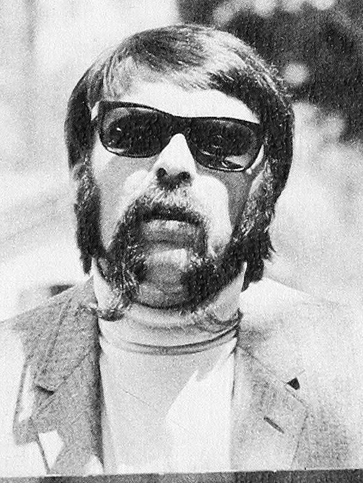

故事
一部聖誕卡通播出前，電視台高層看完，覺得會失敗。那是1965 年的 A Charlie Brown Christmas。配樂用的是爵士，鋼琴手 Vince Guaraldi 的三重奏。
沒有罐頭笑聲，配音的是真正的小孩，還有一段念聖經的台詞。據說高層看完試映，覺得太慢、太安靜。但節目已經排好，只能照播。
結果它的收視非常高，還拿下艾美獎。那段 Linus and Lucy 的鋼琴旋律，從此變成史努比的代表音樂。據說很多美國小孩聽到的第一張爵士唱片，就是這張配樂。收藏起來，聖誕節找一天，把這張爵士配樂從頭聽完。
故事後面
A Charlie Brown Christmas 一九六五年播出前，電視台高層看完覺得太慢、太安靜，沒有罐頭笑聲，還有一段念聖經的台詞。
但節目已經排好只能照播，結果收視很高，還拿下艾美獎。
配樂由鋼琴手 Vince Guaraldi 的三重奏負責，Linus and Lucy 成了經典。很多人第一張爵士唱片就是這張。

這樣聽
聽左手一直重複的節奏，右手旋律在上面跳。
逐句英文
Before a Christmas cartoon aired, network executives watched it and expected a flop.
It was A Charlie Brown Christmas, in 1965.
The score was jazz, by pianist Vince Guaraldi's trio.
No laugh track, real children doing the voices, and a Bible reading.
Reportedly executives found the preview too slow and too quiet.
But it was already scheduled, so it aired as is.
It drew huge ratings and won an Emmy.
The piano tune Linus and Lucy became the signature music of the Peanuts gang.
Reportedly, for many American kids, this soundtrack was their first jazz record.
Save this. Pick a day this Christmas and listen to the whole soundtrack.
查證筆記與出處
收視：條目寫約一千五百萬戶、將近一半電視觀眾，稿裡只寫「非常高」。「第一張爵士唱片」為常見說法，寫據說。
https://en.wikipedia.org/wiki/A_Charlie_Brown_Christmas
https://en.wikipedia.org/wiki/Vince_Guaraldi
一分鐘影片版在 Instagram @jazz101tw。